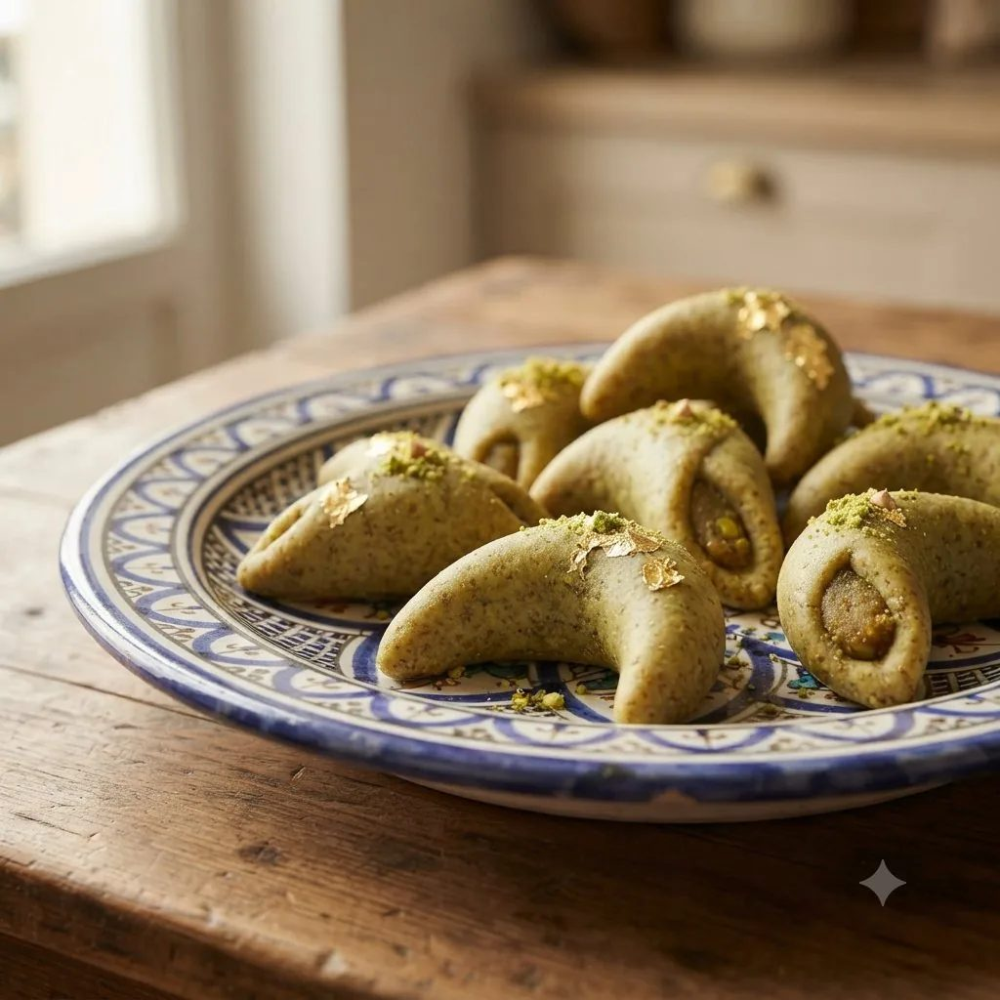

Cigares aux amandes
Petit four allongé en forme de cigare, feuille de brick croustillante roulée autour d'une farce de pâte d'amande, doré au four.

Farce
- Amandes mondées moulues250 g
- Sucre glace150 g
- Beurre fondu30 g
- Fleur d'oranger1 c. à soupe
Montage
- Feuilles de brick10 feuilles
- Beurre fondu80 g
- Sucre glace (déco)pour saupoudrer
Étapes
- Mélanger les amandes moulues, le sucre glace, le beurre fondu et la fleur d'oranger pour la farce.
- Façonner la farce en petits bâtonnets fins.
- Couper les feuilles de brick en bandes, badigeonner de beurre fondu.
- Déposer un bâtonnet de farce à une extrémité et rouler serré en forme de cigare.
- Disposer sur plaque, badigeonner à nouveau de beurre fondu.
- Cuire à 180°C pendant 10 à 12 minutes jusqu'à coloration dorée, saupoudrer de sucre glace en sortie de four.
Vous produisez en volume ?
4Cake fournit les professionnels de la pâtisserie au Maroc : chocolat, fruits secs, décors et matériel, avec tarifs et conditionnements grossiste.
Voir les tarifs grossiste